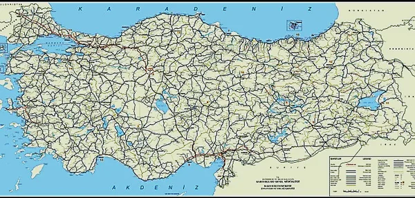
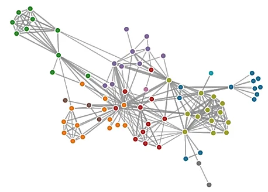

Temel kavramlarDerece, yol, döngüKomşuluk listesi ve matrisiBFSDFSAğırlıksız en kısa yolDijkstra
Sercan KÜLCÜ · Giresun Üniversitesi · Bilgisayar Mühendisliği
Temel Kavramlar
Çizge (Graph)
Düğümlerin (vertex / node) ve bu düğümleri birbirine bağlayan kenarların (edge) bir araya gelmesiyle oluşur.
Karmaşık ilişkileri, ağları ve yapıları temsil etmek için kullanılır.
Çizge teorisi, düğümler ve kenarlar arasındaki ilişkileri inceler.
Bir çizge G = (V, E) ikilisidir: V düğümler kümesi, E kenarlar kümesi. Örnek: V = {0, 1, 2, 3, 4}, E = {(0,1), (0,4), (1,2), (1,3), (1,4), (2,3), (3,4)} · n = |V| = 5, m = |E| = 7
Ağaç ile farkıKök yoktur, döngü olabilir, bir düğüme birden çok yoldan ulaşılabilir.
Bölüm 1'den hatırlaÇizge "birçoğa-birçok" ilişkiyi modeller.
NotasyonBu bölümde n = düğüm sayısı, m = kenar sayısı.
Temel Kavramlar
Düğüm (Vertex, Node)
Çizgenin temel yapı taşıdır.
Şehirler, kişiler, bilgisayarlar gibi nesneleri temsil eder.
Düğüm, bir değer (etiket, ad, konum…) saklayabilir.
Örnek: haritadaki şehirler ve kavşaklar.

Karayolu haritası: şehirler düğüm, yollar kenar
Harita çizge olarak modellenince "İstanbul'dan Van'a en kısa yol hangisi?" sorusu bir çizge algoritması problemine dönüşür (bölümün sonunda: Dijkstra).
Temel Kavramlar
Kenar (Edge)
Düğümleri birbirine bağlayan bağlantılardır.
Kenarlar düğümler arasındaki ilişkiyi temsil eder.
(v, w) bir kenar ise v ve w bitişik (komşu, adjacent) düğümlerdir; kenar bu iki düğüme bağlıdır (incident).
Örnek: şehirler arasındaki yollar, bilgisayar ağındaki bağlantılar, sosyal ağdaki arkadaşlıklar.

Bir sosyal ağ: kişiler düğüm, ilişkiler kenar
Temel Kavramlar
Derece (Degree)
Bir düğümün derecesi, ona bağlı kenar sayısıdır: deg(v).
Derecesi 0 olan (yalnız, isolated) düğümler de olabilir.
Öz döngü (self-loop) dereceye 2 katkı yapar.
Örnek: bir kavşaktaki yolların sayısı.
Her düğümün içinde kendi derecesi yazıyor
El sıkışma lemmasıHer kenar iki uca birer derece verir: Σ deg(v) = 2mÖrnekte: 1+3+3+2+5+2+0 = 16 = 2·8 kenar.
Yönlü çizgedegiriş derecesi (in-degree): gelen ok sayısı, çıkış derecesi (out-degree): giden ok sayısı.Σ giriş = Σ çıkış = m
Temel Kavramlar
Yönlü Çizge (Digraph)
Kenarlar bir düğümden diğerine belirli bir yöndedir: (u, v) ≠ (v, u).
Geri dönüş yolu olmayabilir: örnekte B'den A'ya ulaşılamaz.
Yönlü çizge (directed graph), kısaca digraph olarak da adlandırılır.
Örnek: web sayfaları ve bağlantıları, ders ön koşulları, tek yönlü sokaklar.
Düğüm
A
B
C
D
E
F
giriş derecesi
0
2
1
1
1
1
çıkış derecesi
1
1
1
1
2
0
Temel Kavramlar
Yol (Path) ve Döngü (Cycle)
Yol (path): ardışık düğümleri kenarlarla bağlanan düğüm dizisi.
Basit yol: hiçbir düğümü tekrar etmeyen yol.
Döngü (cycle): aynı düğümde başlayıp biten yol.
Basit döngü: başlangıç düğümü dışında hiçbir düğümü tekrar etmez.
Çizgelerde döngü olabilir; ağaçta döngü yoktur.
Yeşil: A-B-C-D-E-F-A · Kırmızı (kesikli): G-H-I-J-K-L-G
Örnek: uçuş rotası. İstanbul → Ankara → İzmir → İstanbul bir döngüdür; aynı şehre uğramadan dönüyorsa basit döngüdür.
Ağırlıklı çizge: hücrede ağırlık, kenar yoksa ∞ (köşegende 0). Boş hücreye 0 yazmak, 0 ağırlıklı bir kenarla karıştırılabilir.
Çizge Gösterimleri
Komşuluk Listesi (Adjacency List)
n düğüm için n adet liste (çoğunlukla bağlı liste veya dinamik dizi) tutulur.
liste[i], düğüm i'ye komşu olan düğümleri (ağırlıklıysa ağırlıklarıyla) içerir.
Yönsüz çizgede her kenar (v, w) iki listeye de eklenir: w, v'nin listesine; v, w'nin listesine.
Alan karmaşıklığı O(n + m); seyrek çizgeler için idealdir.
Kolay
Bir düğümün komşularını gezmek: O(deg(v))
Kenar ekleme O(1)
Zor
u ile v arasında kenar var mı? Listeyi taramak gerekir: O(deg(u))
Çizge Gösterimleri
Komşuluk Listesi: Üç Örnek
Yönsüz: 6 kenar → listelerde 12 kayıt (her kenar iki kez). Liste uzunluğu = derece.
Yönlü: yalnızca çıkan kenarlar listelenir; 9 kenar → 9 kayıt. C'den çıkan kenar yok, listesi boş.
Ağırlıklı: her kayıt (komşu, ağırlık) çifti tutar; ör. B'nin listesi: (C, 3), (D, 3).
Çizge Gösterimleri
Gösterimlerin Bellek ve İşlem Maliyeti
İşlem (n düğüm, m kenar)
Kenar listesi
Komşuluk listesi
Komşuluk matrisi
Bellek
O(n + m)
O(n + m)
O(n²)
u–v kenarı var mı? getEdge
O(m)
O(min(deg u, deg v))
O(1)
v'nin komşularını gez
O(m)
O(deg v)
O(n)
Kenar ekle
O(1)
O(1)
O(1)
Kenar sil*
O(1)
O(1)
O(1)
Düğüm ekle
O(1)
O(1)
O(n²)
Düğüm sil
O(m)
O(deg v)
O(n²)
* Goodrich'teki gibi kenar nesnesi kendi konumlarını (listelerdeki yerini) biliyorsa. Basit bir List<List<Integer>>'te önce aramak gerekir: O(deg u + deg v).
Seyrek çizge (m ≈ n)Yol ağları, sosyal ağlar → komşuluk listesi. n = 10⁶ düğümde matris 10¹² hücre ister!
Yoğun çizge (m ≈ n²)Sık "kenar var mı?" sorgusu → komşuluk matrisi.
Çizge Gösterimleri
Java ile Komşuluk Listesi
class Cizge {
private final int n; // düğümler: 0..n-1private final List<List<Integer>> komsu = new ArrayList<>();
Cizge(int n) {
this.n = n;
for (int i = 0; i < n; i++) komsu.add(new ArrayList<>());
}
void kenarEkle(int u, int v) {
komsu.get(u).add(v);
komsu.get(v).add(u); // yönlü çizgede bu satır yok
}
List<Integer> komsular(int u) { return komsu.get(u); } // O(1)int derece(int u) { return komsu.get(u).size(); }
}
Matris karşılığıboolean[][] m = new boolean[n][n]; kenar ekle: m[u][v] = m[v][u] = true; sorgu m[u][v] O(1).
Ağırlıklı çizgeListe elemanı int[]{v, w} veya küçük bir Kenar sınıfı; matriste int[][], kenar yoksa Integer.MAX_VALUE.
Gezinme (BFS / DFS)
Gezinme Algoritmaları
Gezinme (traversal): bir başlangıç düğümünden ulaşılabilen tüm düğümleri, her birini bir kez sistematik olarak ziyaret etmek.
Genişlik Öncelikli Arama (BFS)Breadth-First Search. Önce tüm yakın komşular, sonra onların komşuları… Seviye seviye ilerler.yardımcı yapı: kuyruk (FIFO)
Derinlik Öncelikli Arama (DFS)Depth-First Search. Bir yol boyunca gidebildiği kadar derine iner, çıkmazda geri döner.yardımcı yapı: yığın (LIFO) / özyineleme
Ağaçtan farkı: çizgede döngü olabilir, aynı düğüme birden çok yoldan gelinebilir → ziyaret edildi işareti (ör. boolean[] ziyaret) şarttır; yoksa algoritma sonsuza kadar döner.
Gezinme (BFS / DFS)
Genişlik Öncelikli Arama (BFS)
Düğümleri seviye seviye keşfeder: önce başlangıca 1 kenar uzaklıktakiler, sonra 2 kenar uzaklıktakiler…
Kuyruk yapısını kullanır: ilk keşfedilen ilk işlenir.
Her düğüm yalnızca bir kez ziyaret edilir.
Artıları
Ağırlıksız çizgede en kısa yolu (en az kenar) bulur.
Yakın düğümleri hızlı keşfeder.
Eksisi
Bellek kullanımı yüksek olabilir: bir seviyenin tamamı kuyrukta bekler.
Örnek: sosyal ağda "arkadaşımın arkadaşları" (2. seviye), bir web tarayıcının (crawler) siteyi katman katman gezmesi.
Gezinme (BFS / DFS)
BFS Algoritması
Sözde kod
BFS(başlangıç):
kuyruk.ekle(başlangıç)
başlangıç.ziyaretEdildi()
while kuyruk boş değil:
w = kuyruk.çıkar()
for w'nin ziyaret edilmemiş
her komşusu u:
u.ziyaretEdildi()
kuyruk.ekle(u)
Düğüm kuyruğa girerken işaretlenir; böylece aynı düğüm kuyruğa iki kez girmez.
Java
void bfs(int s) {
boolean[] ziyaret = new boolean[n];
Queue<Integer> q = new ArrayDeque<>();
ziyaret[s] = true;
q.add(s);
while (!q.isEmpty()) {
int w = q.poll();
System.out.print(w + " ");
for (int u : komsu.get(w))
if (!ziyaret[u]) {
ziyaret[u] = true;
q.add(u);
}
}
}
Gezinme (BFS / DFS)
BFS Adım Adım (başlangıç: A)
Başlangıç: A ziyaret edildi olarak işaretlenir ve kuyruğa eklenir.
A çıkarılır; ziyaret edilmemiş komşuları B, F, I işaretlenip kuyruğa eklenir.
B çıkarılır; ziyaret edilmemiş komşuları C, E işaretlenip kuyruğa eklenir.
F çıkarılır; ziyaret edilmemiş komşuları G işaretlenip kuyruğa eklenir.
I çıkarılır; ziyaret edilmemiş komşusu yok, kuyruğa bir şey eklenmez.
C çıkarılır; ziyaret edilmemiş komşuları D işaretlenip kuyruğa eklenir.
E çıkarılır; ziyaret edilmemiş komşusu yok, kuyruğa bir şey eklenmez.
G çıkarılır; ziyaret edilmemiş komşusu yok, kuyruğa bir şey eklenmez.
D çıkarılır; ziyaret edilmemiş komşuları H işaretlenip kuyruğa eklenir.
H çıkarılır; ziyaret edilmemiş komşusu yok, kuyruğa bir şey eklenmez. Kuyruk boş: gezinme biter. Sıra: A B F I C E G D H
Gezinme (BFS / DFS)
Derinlik Öncelikli Arama (DFS)
Düğümleri bir yol boyunca keşfeder: gidebildiği kadar derine iner.
Çıkmaza gelince (ziyaret edilmemiş komşu kalmayınca) geri döner (backtracking) ve başka dalı dener.
Yığın (stack) yapısı veya özyinelemeli çağrılar kullanılır.
Her düğüm yalnızca bir kez ziyaret edilir.
Artıları
Bellek kullanımı genellikle düşüktür (yalnızca mevcut yol yığında).
Bir yolun sonuna kadar gitme yeteneği sağlar.
Eksisi
En kısa yolu garanti etmez.
Kullanım: labirent çözme, döngü tespiti, bağlı bileşenleri bulma, topolojik sıralama.
Gezinme (BFS / DFS)
DFS Algoritması
Özyinelemeli
void dfs(int v, boolean[] ziyaret) {
ziyaret[v] = true;
System.out.print(v + " ");
for (int u : komsu.get(v))
if (!ziyaret[u])
dfs(u, ziyaret);
}
Özyineleme, yığını bizim yerimize çağrı yığını (Bölüm 4) ile tutar.
Açık yığınla
void dfsYigin(int s) {
boolean[] ziyaret = new boolean[n];
Deque<Integer> yigin = new ArrayDeque<>();
yigin.push(s); ziyaret[s] = true;
while (!yigin.isEmpty()) {
int v = yigin.peek();
Integer yeni = null;
for (int u : komsu.get(v))
if (!ziyaret[u]) { yeni = u; break; }
if (yeni == null) yigin.pop(); // geri dönelse { ziyaret[yeni] = true;
yigin.push(yeni); }
}
}
Gezinme (BFS / DFS)
DFS Adım Adım (başlangıç: A)
Başlangıç: A yığına eklenir ve ziyaret edilir.
A'nin ilk ziyaret edilmemiş komşusu B → yığına eklenir.
B'nin ilk ziyaret edilmemiş komşusu C → yığına eklenir.
C'nin ilk ziyaret edilmemiş komşusu D → yığına eklenir.
D'nin ilk ziyaret edilmemiş komşusu G → yığına eklenir.
G'nin ilk ziyaret edilmemiş komşusu E → yığına eklenir.
E: tüm komşuları ziyaret edilmiş → yığından çıkarılır (geri dönüş); G'nin ilk ziyaret edilmemiş komşusu F → yığına eklenir.
F, G sırayla çıkarılır (geri dönüş).
D'nin ilk ziyaret edilmemiş komşusu H → yığına eklenir.
H, D, C, B sırayla çıkarılır (geri dönüş).
A'nin ilk ziyaret edilmemiş komşusu I → yığına eklenir.
I, A sırayla çıkarılır (geri dönüş). Yığın boş: bitti. Sıra: A B C D G E F H I
Gezinme (BFS / DFS)
BFS ve DFS Karşılaştırması
BFS
DFS
Yardımcı yapı
Kuyruk (FIFO)
Yığın (LIFO) / özyineleme
Örnekteki sıra
A B F I C E G D H
A B C D G E F H I
Zaman (komşuluk listesi)
O(n + m)
O(n + m)
Zaman (komşuluk matrisi)
O(n²)
O(n²)
Ek bellek
O(n): en geniş seviye kuyrukta
O(n): en uzun yol yığında
En kısa yol?
Evet (ağırlıksız çizgede)
Hayır
Tipik kullanım
en az adım, seviye bulma
döngü tespiti, bileşenler, labirent
Neden O(n + m)? Her düğüm bir kez kuyruğa/yığına girer (n); her düğümün komşu listesi bir kez taranır, toplam liste uzunluğu 2m (yönsüz). Matriste her düğüm için tüm satır taranır: n · n.
Sıralar, komşuların alfabetik sırayla gezildiği varsayımıyla elde edildi; komşu sırası değişirse ziyaret sırası da değişir.
En Kısa Yol
Ağırlıksız En Kısa Yol Problemi
Kaynak düğümden diğer tüm düğümlere olan en kısa yolları bulur (tek kaynaklı en kısa yol).
Her kenarın aynı ağırlığa (1) sahip olduğu varsayılır: yol uzunluğu = kenar sayısı.
Çözüm: BFS. Seviye k'daki düğümün uzaklığı tam olarak k'dır.
Kaynak 1; düğümlerin yanındaki sayı 1'e uzaklık
7'ye iki en kısa yol var: 1 → 4 → 6 → 7 ve 1 → 3 → 8 → 7 (ikisi de 3 kenar). BFS bunlardan birini bulur; uzunluk her durumda 3'tür.
En Kısa Yol
Ağırlıksız En Kısa Yol Algoritması
Sözde kod
mesafe[tüm v] = ∞
mesafe[s] = 0
kuyruk.ekle(s)
while kuyruk boş değil:
w = kuyruk.çıkar()
for w'nin her komşusu u:
if mesafe[u] == ∞:
mesafe[u] = mesafe[w] + 1
kuyruk.ekle(u)
return mesafe
"mesafe = ∞" aynı zamanda "ziyaret edilmedi" demektir; ayrı bir dizi gerekmez.
Java · O(n + m)
Map<Integer, Integer> agirliksizEnKisaYol(int s) {
Map<Integer, Integer> mesafe = new HashMap<>();
for (int v : cizge.keySet())
mesafe.put(v, Integer.MAX_VALUE); // ∞
mesafe.put(s, 0);
Queue<Integer> kuyruk = new LinkedList<>();
kuyruk.offer(s);
while (!kuyruk.isEmpty()) {
int w = kuyruk.poll();
for (int u : cizge.get(w))
if (mesafe.get(u) == Integer.MAX_VALUE) {
mesafe.put(u, mesafe.get(w) + 1);
kuyruk.offer(u);
}
}
return mesafe;
}
En Kısa Yol
Ağırlıksız En Kısa Yol Adım Adım
Başlangıç: mesafe[A] = 0, diğerleri ∞; A kuyruğa eklenir.
I çıkarılır (yeni komşu yok); C çıkarılır, D ∞ → 2 + 1 = 3.
E ve G çıkarılır; tüm komşularının mesafesi zaten belli, değişiklik yok.
D çıkarılır; H ∞ → 3 + 1 = 4.
H çıkarılır; kuyruk boş. Sonuç: A 0 · B, F, I 1 · C, E, G 2 · D 3 · H 4.
En Kısa Yol
Ağırlıklı En Kısa Yol Problemi
Kaynak düğümden diğer tüm düğümlere olan en kısa yolları bulur.
Her kenarın farklı bir ağırlığı olabilir: uzaklık, süre, maliyet…
Yol uzunluğu = kenar ağırlıklarının toplamı.
A'dan F'ye en kısa yol: A → C → E → D → F = 2 + 3 + 4 + 11 = 20
BFS burada yetmezEn az kenarlı yol A → B → D → F (3 kenar) ama uzunluğu 4 + 10 + 11 = 25.
Çözüm: Dijkstra algoritmasıEdsger W. Dijkstra, 1956. Ağırlıklar negatif olmamalıdır.
En Kısa Yol
Dijkstra Algoritması: Fikir ve Sözde Kod
Açgözlü (greedy) yaklaşım: her adımda, henüz kesinleşmemiş düğümler içinde mesafesi en küçük olanı seç ve kesinleştir.
Seçilen u'nun her komşusu v için gevşetme (relaxation) yap: u üzerinden gitmek daha kısaysa mesafe[v]'yi güncelle.
En küçüğü hızlı bulmak için öncelikli kuyruk (Bölüm 8, min-heap) kullanılır.
önceki[v] dizisi, yolun kendisini geri izlemek içindir.
Dijkstra(G, s):
for her düğüm v:
mesafe[v] = ∞
önceki[v] = tanımsız
mesafe[s] = 0
Q = tüm düğümler // öncelikli kuyrukwhile Q boş değil:
u = Q.çıkar() // en küçük mesafe[u]for u'nun Q'daki her komşusu v:
alt = mesafe[u] + ağırlık(u, v)
if alt < mesafe[v]:
mesafe[v] = alt
önceki[v] = u
// Q'da v'nin önceliğini azalt
En Kısa Yol
Dijkstra Algoritması: Java
int[] dijkstra(List<List<int[]>> adj, int s) { // adj.get(u): {komşu, ağırlık} dizileriint[] d = new int[adj.size()];
Arrays.fill(d, Integer.MAX_VALUE); d[s] = 0;
PriorityQueue<int[]> pq = // {düğüm, mesafe}, mesafeye görenew PriorityQueue<>((a, b) -> Integer.compare(a[1], b[1]));
pq.add(new int[]{s, 0});
while (!pq.isEmpty()) {
int[] e = pq.poll(); int u = e[0];
if (e[1] > d[u]) continue; // bayat kayıt: atlafor (int[] k : adj.get(u)) {
int v = k[0], alt = d[u] + k[1];
if (alt < d[v]) { d[v] = alt; pq.add(new int[]{v, alt}); }
}
}
return d;
}
Öncelik = mesafe (düğüm numarası değil). Java'nın PriorityQueue'sunda "önceliği azalt" yok: yeni kayıt eklenir, eskisi çıkınca bayat olarak atlanır. Yol için güncellemeye onceki[v] = u; eklenir.
En Kısa Yol
Dijkstra Adım Adım (kaynak: A)
Başlangıç: mesafe[A] = 0, diğerleri ∞. Öncelik kuyruğunda yalnızca (A, 0) var.
En küçük mesafeli A (0) çıkarılır ve kesinleşir. B: ∞ → 4; F: ∞ → 7; I: ∞ → 3.
En küçük mesafeli I (3) çıkarılır ve kesinleşir. Kesinleşmemiş komşusu yok.
En küçük mesafeli B (4) çıkarılır ve kesinleşir. C: ∞ → 5; E: ∞ → 6.
En küçük mesafeli C (5) çıkarılır ve kesinleşir. D: ∞ → 12; E: 5 + 3 = 8 ≥ 6, değişmez.
En küçük mesafeli E (6) çıkarılır ve kesinleşir. G: ∞ → 8.
En küçük mesafeli F (7) çıkarılır ve kesinleşir. G: 7 + 2 = 9 ≥ 8, değişmez.
En küçük mesafeli G (8) çıkarılır ve kesinleşir. D: 12 → 11.
En küçük mesafeli D (11) çıkarılır ve kesinleşir. H: ∞ → 16.
En küçük mesafeli H (16) çıkarılır ve kesinleşir. Kesinleşmemiş komşusu yok.
Yolu bulmak için önceki zinciri geri izlenir: H ← D ← G ← E ← B ← A. Yol: A → B → E → G → D → H = 4 + 2 + 2 + 3 + 5 = 16.
En Kısa Yol
Dijkstra Algoritmasının Analizi
Uygulama
Karmaşıklık
Neden?
Öncelikli kuyruk (ikili heap)
O((n + m) log n)
n kez en küçüğü çıkar, en çok m kez güncelle/ekle; her biri O(log n)
Kuyruksuz (dizi taraması)
O(n² + m) = O(n²)
Her adımda en küçük mesafeli düğümü bulmak için n düğüm taranır; komşu kontrolleri toplam m
Hangisi ne zaman?Seyrek çizgede (m ≈ n) heap: O(n log n). Çok yoğun çizgede (m ≈ n²) dizi taraması O(n²) daha iyi olabilir.
Negatif ağırlıkKesinleşen bir mesafe sonradan negatif kenarla kısalabilir → Dijkstra yanlış sonuç verir. Bu durumda Bellman-Ford kullanılır.
Neden doğru? Ağırlıklar ≥ 0 iken, kuyruktaki en küçük mesafeli düğüme başka bir düğüm üzerinden daha kısa ulaşılamaz: öbür yollar zaten en az bu kadar uzundur.
Özet
Özet
KavramlarG = (V, E); düğüm, kenar, derece (Σ deg = 2m), yönlü / yönsüz, ağırlıklı, yol, döngü, bağlı bileşen, tam çizge.